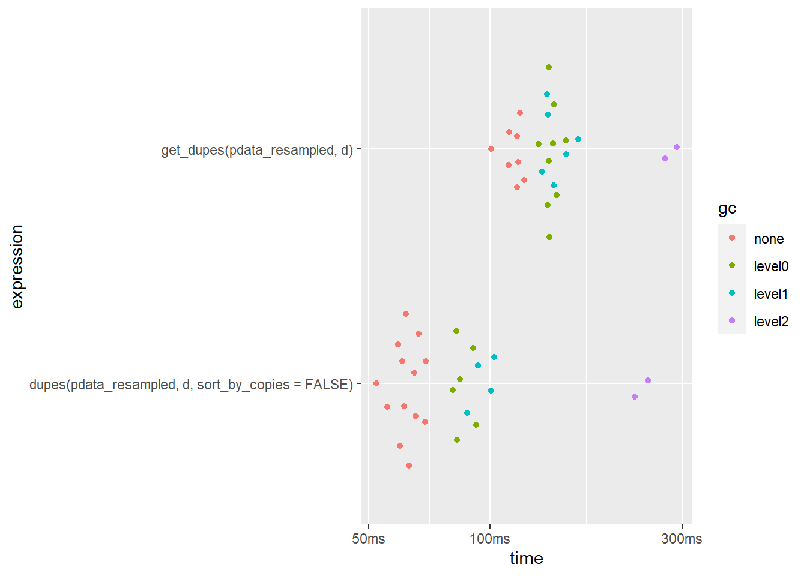
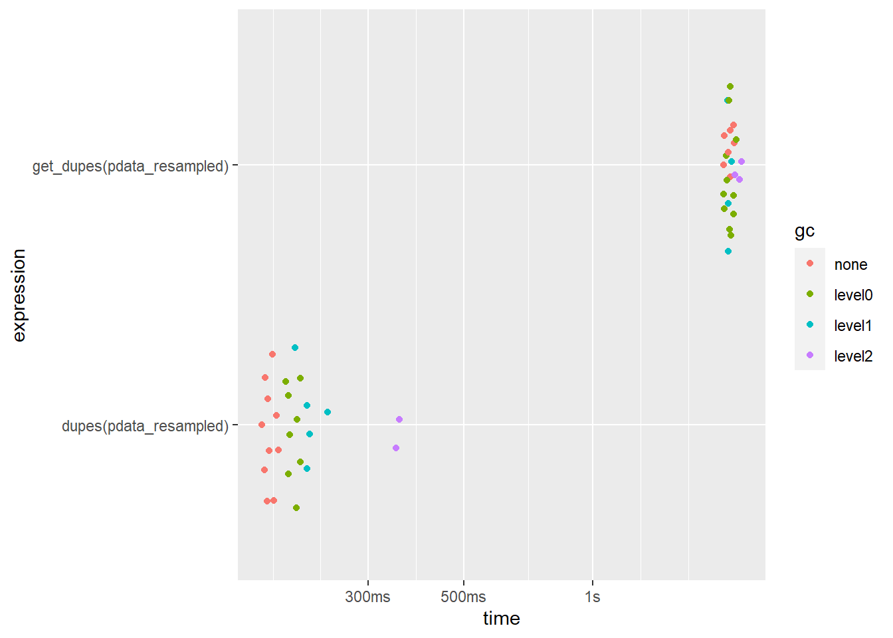
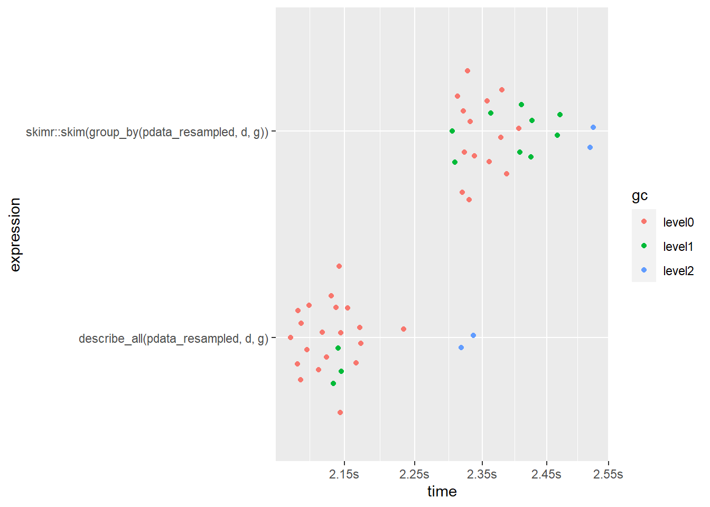
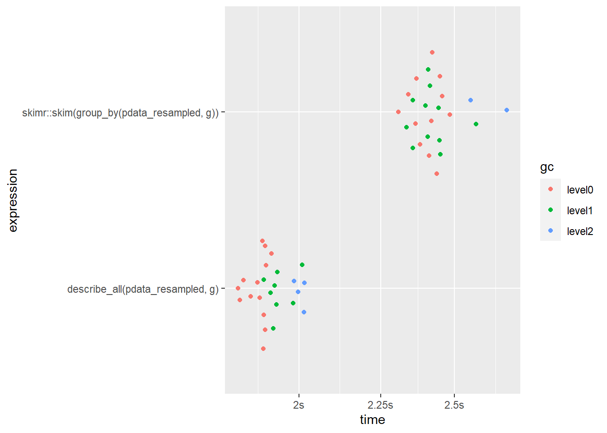

Interrogating Data
As usual, we’ll start by inspecting the structure of it with dplyr::glimpse().
glimpse(pdata)
## Rows: 12,000
## Columns: 10
## $ id <int> 1, 2, 3, 4, 5, 6, 7, 8, 9, 10, 11, 12, 13, 14, 15, 16, 17,...
## $ d <date> 2008-01-01, 2008-01-01, 2008-01-01, 2008-01-01, 2008-01-0...
## $ g <fct> e, c, d, c, a, a, d, b, e, c, a, a, a, a, a, b, c, b, a, c...
## $ high_low <chr> "high", "high", "low", "high", "high", "high", "low", "low...
## $ even <lgl> FALSE, TRUE, FALSE, TRUE, FALSE, TRUE, FALSE, TRUE, FALSE,...
## $ y1 <dbl> 106.26334, 96.47998, 99.33155, 108.94097, 99.65422, 101.59...
## $ y2 <dbl> 117.92654, 107.16036, 96.16405, 101.78278, 113.36807, 113....
## $ x1 <int> 59, 5, 71, 60, 96, 19, 77, 74, 92, 4, 56, 100, 69, 44, 91,...
## $ x2 <int> 116, 101, 111, 130, 196, 163, 133, 191, 106, 134, 142, 111...
## $ x3 <int> 248, 238, 250, 287, 284, 206, 201, 249, 277, 209, 285, 277...
This tells us that we’ve got 12,000 rows and 10 columns of various classes to work with including an “id” and date (“d”) column that could represent distinct observations.
Instead of 12,000 rows, let’s over-sample it with replacement so that there are 1,000,000 rows to allow the performance of elucidate functions to be more realistically evaluated.
pdata_resampled <- pdata[sample(1:nrow(pdata), 1e6, replace = TRUE),]
dim(pdata_resampled)
## [1] 1000000 10
checking for row copies()
dplyr::glimpse() is a great first step in the data interrogation process. After learning about the columns names classes, dimensions, and previewing some of the data, the next thing I usually check is how many copies I have of each row based on columns like subject ID # and date, where I’m hoping that there are as many copies as I should find (i.e. one row per ID and date combination, representing unique measurements). Usually this means making sure there aren’t any unexpected row duplicates. This can easily be checked with elucidate::copies().
pdata_resampled %>%
copies() %>%
glimpse() #glimpse() again to show all output columns
## No column names specified - using all columns.
## Rows: 1,000,000
## Columns: 12
## $ id <int> 538, 493, 683, 32, 192, 150, 525, 950, 143, 922, 421, 8...
## $ d <date> 2017-01-01, 2012-01-01, 2019-01-01, 2012-01-01, 2013-0...
## $ g <fct> c, d, d, d, c, d, a, d, b, d, c, e, b, e, c, c, a, d, a...
## $ high_low <chr> "low", "low", "low", "low", "low", "high", "low", "high...
## $ even <lgl> TRUE, FALSE, FALSE, TRUE, TRUE, TRUE, FALSE, TRUE, FALS...
## $ y1 <dbl> 261.3699, 142.9283, 215.8662, 157.4569, 155.9329, 105.6...
## $ y2 <dbl> 93.77677, 99.02914, 96.63750, 79.26261, 96.89765, 117.4...
## $ x1 <int> 92, 65, 81, 92, 6, 90, 42, 60, 69, 67, 64, 95, 40, 50, ...
## $ x2 <int> 176, 129, 134, 181, 120, 167, 171, 154, 172, 117, 171, ...
## $ x3 <int> 206, 234, 279, 277, 204, 260, 273, 207, 288, 235, 217, ...
## $ copy_number <int> 1, 1, 1, 1, 1, 1, 1, 1, 1, 1, 1, 1, 1, 1, 1, 1, 1, 1, 1...
## $ n_copies <int> 65, 96, 92, 78, 86, 90, 80, 91, 88, 72, 81, 85, 74, 77,...
You can see that the default version of copies() simply returns the input data with the addition of two columns called “copy_number” (which copy the rows is if multiple copies were detected) and “n_copies” (total number of row copies detected).
In this case, I’ve resampled the same data quite a lot, so there are multiple copies of all original rows. copies() will also preserve the original ordering of the rows unless you ask it to sort the output by the number of copies. You do so by setting the sort_by_copies argument to TRUE. If you also only want to see duplicated rows, you can set the filter argument to “dupes”.
pdata_resampled %>%
copies(filter = "dupes", sort_by_copies = TRUE)
## No column names specified - using all columns.
## Duplicated rows detected! 1000000 of 1000000 rows in the input data have multiple copies.
## # A tibble: 1,000,000 x 11
## id d g high_low even y1 y2 x1 x2 x3 n_copies
## <int> <date> <fct> <chr> <lgl> <dbl> <dbl> <int> <int> <int> <int>
## 1 599 2017-01-01 c low FALSE 264. 99.7 76 126 247 121
## 2 599 2017-01-01 c low FALSE 264. 99.7 76 126 247 121
## 3 599 2017-01-01 c low FALSE 264. 99.7 76 126 247 121
## 4 599 2017-01-01 c low FALSE 264. 99.7 76 126 247 121
## 5 599 2017-01-01 c low FALSE 264. 99.7 76 126 247 121
## 6 599 2017-01-01 c low FALSE 264. 99.7 76 126 247 121
## 7 599 2017-01-01 c low FALSE 264. 99.7 76 126 247 121
## 8 599 2017-01-01 c low FALSE 264. 99.7 76 126 247 121
## 9 599 2017-01-01 c low FALSE 264. 99.7 76 126 247 121
## 10 599 2017-01-01 c low FALSE 264. 99.7 76 126 247 121
## # ... with 999,990 more rows
As the message informed us, by default copies() will check for duplicates based on all columns unless you specify columns to condition the search upon. This is done by simply listing the unquoted names of the columns. E.g. to check for copies based on just the “id” and “d” (date) columns. This time we’ll use the original version of pdata, to see if each combination of the id and d columns do in fact represents distinct observations…
pdata %>%
copies(id, d, #only consider these columns when searching for copies
#only return the rows with at least one duplicate
filter = "dupes",
#sort the result by the number of copies and then specified
#conditioning variables (in the same order specified).
sort_by_copies = TRUE)
## No duplicates detected.
## # A tibble: 0 x 11
## # ... with 11 variables: id <int>, d <date>, g <fct>, high_low <chr>,
## # even <lgl>, y1 <dbl>, y2 <dbl>, x1 <int>, x2 <int>, x3 <int>,
## # n_copies <int>
# note: if you didn't specify any conditioning variables, sort_by_copies will
# only cause copies() to sort the output by the n_copies column
…and they do :smile:.
Since the extra copies in the resampled version of the data are meaningless, if this were a real dataset intended for research purposes we would probably want to get rid of them and just keep the 1st copy of each to end up with a distinct set of rows. This can also be achieved with copies() by instead setting the filter argument to “first” (or “last” for the last copy). In this situation, we actually recover a data frame that is equivalent to the original version of pdata, as demonstrated using identical() after some sorting and reformatting.
pdata_distinct <- pdata_resampled %>% #the resampled 1,000,000 row version
copies(filter = "first") %>% #only keep the 1st detected copy of each row
arrange(id, d, g, high_low, even, y1, y2, x1, x2, x3) %>%
wash_df()
## No column names specified - using all columns.
pdata_sorted <- pdata %>% #original data that has not been resampled
arrange(id, d, g, high_low, even, y1, y2, x1, x2, x3) %>%
wash_df()
pdata_distinct %>% glimpse
## Rows: 12,000
## Columns: 10
## $ id <dbl> 1, 1, 1, 1, 1, 1, 1, 1, 1, 1, 1, 1, 2, 2, 2, 2, 2, 2, 2, 2...
## $ d <date> 2008-01-01, 2009-01-01, 2010-01-01, 2011-01-01, 2012-01-0...
## $ g <chr> "e", "e", "e", "e", "e", "e", "e", "e", "e", "e", "e", "e"...
## $ high_low <chr> "high", "low", "high", "low", "low", "low", "low", "low", ...
## $ even <lgl> FALSE, FALSE, FALSE, FALSE, FALSE, FALSE, FALSE, FALSE, FA...
## $ y1 <dbl> 106.26334, 110.03424, 157.88571, 110.80402, 134.40024, 158...
## $ y2 <dbl> 117.92654, 90.61188, 106.97367, 99.20771, 96.22263, 94.980...
## $ x1 <dbl> 59, 14, 14, 69, 93, 26, 47, 79, 19, 87, 75, 86, 5, 73, 25,...
## $ x2 <dbl> 116, 186, 141, 186, 193, 149, 180, 197, 196, 135, 172, 199...
## $ x3 <dbl> 248, 238, 243, 256, 216, 277, 232, 251, 293, 261, 287, 261...
identical(pdata_distinct, pdata_sorted)
## [1] TRUE
Here the dplyr::arrange() and elucidate::wash_df() steps only serve to standardize the formatting/order of the data without modifying any of the actual values. There will be more about wash_df() later. Now you also know how to eliminate row duplicates and recover data that has been oversampled. When working with real data, this issue most commonly occurs when a join goes awry. In fact, I strongly recommend checking for duplicates and filtering them if appropriate both before and after every join, at least the first time you’re trying to combine two datasets. copies() can help you with both tasks.
Real world relevance - Not long ago I was examining medical records and expected to see one record per person per visit to a health care provider. I was surprised to learn that in fact the data contained one row per service provided, with multiple rows per visit. Checking for duplicates using copies() revealed this important structural aspect of the data, which subsequently determined how I prepared it for analysis.
count()-ing unique values
The counts* set of functions helps you quickly check your data for manual entry errors or weird values by providing counts of unique values. In my experience, such errors tend to show up as very rare or common values.
counts() returns the unique values and counts for a vector in the form “value_count”, sorted by decreasing frequency.
counts(pdata_resampled$g)
## [1] "a_216376" "b_205077" "d_198300" "e_195231" "c_185016"
#use order = "a" or "i" to sort in ascending/increasing order
counts_all() gives you a list of unique values and their frequency for all columns in a data frame. To avoid printing too much here, we’ll first select a few columns to show you what the output looks like.
pdata_resampled %>%
select(d, high_low, even) %>%
counts_all()
## $d
## [1] "2019-01-01_83798" "2015-01-01_83592" "2008-01-01_83530" "2014-01-01_83452"
## [5] "2018-01-01_83396" "2013-01-01_83381" "2012-01-01_83308" "2017-01-01_83304"
## [9] "2010-01-01_83293" "2009-01-01_83081" "2016-01-01_83057" "2011-01-01_82808"
##
## $high_low
## [1] "high_503773" "low_496227"
##
## $even
## [1] "FALSE_500063" "TRUE_499937"
For convenience, elucidate also provides shortcut functions counts_tb() and counts_tb_all() that give you the top and bottom “n” unique values (“n” is up to 10 by default) in terms of frequency. Here we’ll just ask for the top 5 and bottom 5 values.
pdata_resampled %>%
select(d, high_low, even) %>%
counts_tb_all(n = 5)
## $d
## top_v top_n bot_v bot_n
## 1 2019-01-01 83798 2011-01-01 82808
## 2 2015-01-01 83592 2016-01-01 83057
## 3 2008-01-01 83530 2009-01-01 83081
## 4 2014-01-01 83452 2010-01-01 83293
## 5 2018-01-01 83396 2017-01-01 83304
##
## $high_low
## top_v top_n bot_v bot_n
## 1 high 503773 low 496227
## 2 low 496227 high 503773
##
## $even
## top_v top_n bot_v bot_n
## 1 FALSE 500063 TRUE 499937
## 2 TRUE 499937 FALSE 500063
This time we get a list of tibbles instead of a list of vectors, with the top values (“top_v”) and their counts (“top_n”) as a pair of columns, and the bottom values (“bot_v”) beside their counts (“bot_n”). You may have noticed that in cases where there are fewer than “n” unique values, all of them will be shown under each of the top_* and bot_* columns, albeit in opposite orders. As expected, counts_tb() gives you a single tibble showing the top and bottom counts for a single column.
Using the mark() function from the bench package (i.e. bench::mark()), we can see that these functions run reasonably fast on even 1,000,000 rows of data; under 10 seconds on my laptop (Intel i7-9750H processor @2.6 GHz with 16GB of RAM).
mark(
#just wrap the expression you want to evaluate the performance of with the
#bench::mark() function
pdata_resampled %>%
select(d, high_low, even) %>%
counts_tb_all(),
#specify the number of iterations to use for benchmarking with the iterations
#argument
iterations = 10) %>%
#subset the output to just get the timing & memory usage info
select(median)
## Warning: Some expressions had a GC in every iteration; so filtering is disabled.
## # A tibble: 1 x 1
## median
## <bch:tm>
## 1 8.77s
Now you know how easy it can be to check for data entry errors with the counts* set of elucidate functions.
The latest version of elucidate also includes a mode() function which returns just the most common value (i.e. the mode) of any vector.
describe()-ing missingness & extreme values
Checking for other anomalies like extreme values (outliers) and missing values can be achieved with describe(). To start with, we’ll subset the output to just focus on columns relevant these quality indicators.
pdata_resampled %>%
describe(y1) %>%
#desctibe() outputs a tibble, which means we can subsequently manipulate the
#output with dplyr functions, like select()
select(cases:p_na, p0:p100)
## # A tibble: 1 x 9
## cases n na p_na p0 p25 p50 p75 p100
## <int> <int> <int> <dbl> <dbl> <dbl> <dbl> <dbl> <dbl>
## 1 1000000 1000000 0 0 69.2 121. 145. 181. 289.
From this subset of the output alone we can tell that there are no missing values for y1, which ranges from a minimum (p0) of 69 to a maximum (p100) of 289.2. If p0 is less than ~1.5 x the interquartile range (p75-p25) away from p25 (= 25th percentile) or p100 is >1.5 x IQR greater than p75 (= 75th percentile), we might be concerned about possible outliers in the data. However, unless the deviation is really obvious, you’re better off just looking at a box plot (basically gets you the same information much faster) using elucidate::plot_box(). If you happen to know a priori what the normal range of the dependent variable is you can just check the minimum and maximum values for potential outliers.
Data entry errors can show up here as extreme deviations, like a maximum value of 2,892 or a minimum value of -500 would be in this case. You should also check to see if most of the percentiles are very close to the same value, which could indicate the presence of ceiling effects or floor effects in the dependent variable.
Another thing to keep in mind is that some data collection protocols use codes like “9999” (when most true values are < 100) to represent invalid responses (e.g. the patient refused to answer the question) or a specific reason data are missing (e.g. equipment failures). If possible, you should check for those sorts of details in any available protocol documents or other metadata that exist for the data you’re using.
Descriptives
describe() a vector with summary statistics
To get a descriptive summary of a vector you could use the base R summary() function, which is very fast but yields rather limited information. For numeric vectors, summary() will give you the minimum, mean, median, 25th percentile, 75th percentile, and maximum values. It will also tell you how many NA’s there are, but only if some are detected (and not for non-numeric vectors). Alternatively, we can use describe() to get most (or all) of the summary statistics we typically want.
pdata_resampled$y1 %>% summary()
## Min. 1st Qu. Median Mean 3rd Qu. Max.
## 69.22 120.93 144.81 153.73 181.15 289.24
describe(data = pdata_resampled,
#if data is a data frame, then you specify the column to describe using
#the 2nd argument "y"
y = y1,
#you can output the results as a data.table instead of a tibble
#(default is "tibble") so all output is printed
output = "dt")
## cases n na p_na mean sd se p0 p25 p50 p75
## 1: 1000000 1000000 0 0 153.731 42.752 0.043 69.224 120.933 144.809 181.146
## p100 skew kurt
## 1: 289.235 0.737 -0.187
#equivalently, describe(pdata_resampled$y1, output = "dt")
In addition to everything provided by summary(), describe() also gives us the standard deviation, standard error of the mean, and clearer information on the shape of the distribution via skewness = “skew” and (excess-)kurtosis = “kurt”, where values of either > 1 or < -1 indicate non-trivial deviations from normality. In such cases you might want to use the median (p50) and as a measure of central tendency rather than the mean, and the interquartile range (p75-p25) as a measure of the spread of values instead of the standard deviation or standard error. You may also want to look at the distribution with one of the plot_* functions covered below. elucicidate also provides convenience wrappers for the skewness() and kurtosis() functions in the e1071 (and other) packages if you want just these measures for a numeric vector.
We also get information on the presence of missing values, as highlighted previously.
grouped descriptions
Experimental research typically focuses on group comparisons (i.e. intervention vs. control), which was a key consideration in developing elucidate. Where possible, elucidate functions make it easy for you to incorporate grouping variables. For example, you can specify any number of them in the describe* functions as unquoted column names via the special ... argument. For example, to summarise the “y1” numeric variable in pdata for each level of the factor g, we just use:
pdata_resampled %>%
#1st column name is passed to the y argument to indicate the variable to be
#described
describe(y1,
#subsequent unquoted column names are interpreted as grouping
#variables
g)
## # A tibble: 5 x 15
## g cases n na p_na mean sd se p0 p25 p50 p75
## <fct> <int> <int> <int> <dbl> <dbl> <dbl> <dbl> <dbl> <dbl> <dbl> <dbl>
## 1 c 185016 185016 0 0 177. 57.0 0.132 77.0 127. 165. 232.
## 2 d 198300 198300 0 0 174. 44.0 0.099 69.2 138. 175. 214.
## 3 a 216376 216376 0 0 134. 25.8 0.055 75.9 112. 133. 156.
## 4 b 205077 205077 0 0 152. 37.9 0.084 74.4 118. 147. 188.
## 5 e 195231 195231 0 0 135. 18.6 0.042 75.1 123. 137. 148.
## # ... with 3 more variables: p100 <dbl>, skew <dbl>, kurt <dbl>
#or more compactly: describe(pdata, y1, g)
It’s really that easy.
describe_all() columns in a data frame
What if you want to describe all columns of a data frame? What about such a description for each level of one or more grouping variables? This is what describe_all() does.
To describe a subset of variables instead of all of them, just pass the data through dplyr::select() before piping it to describe_all().
pdata_resampled %>%
#for the sake of brevity we'll just pick one of each major class to
#demonstrate class-specific results that are provided
select(d, g, high_low, even, y2, x1) %>%
describe_all()
## $date
## # A tibble: 1 x 8
## variable cases n na p_na n_unique start end
## <chr> <int> <int> <int> <dbl> <int> <date> <date>
## 1 d 1000000 1000000 0 0 12 2008-01-01 2019-01-01
##
## $factor
## # A tibble: 1 x 12
## variable cases n na p_na n_unique ordered v1_n v2_n v3_n v4_n
## <chr> <int> <int> <int> <dbl> <int> <lgl> <chr> <chr> <chr> <chr>
## 1 g 1.00e6 1.00e6 0 0 5 FALSE a_21~ b_20~ d_19~ e_19~
## # ... with 1 more variable: v5_n <chr>
##
## $character
## # A tibble: 1 x 8
## variable cases n na p_na n_unique v1_n v2_n
## <chr> <int> <int> <int> <dbl> <int> <chr> <chr>
## 1 high_low 1000000 1000000 0 0 2 high_503773 low_496227
##
## $logical
## # A tibble: 1 x 9
## variable cases n na p_na n_TRUE n_FALSE p_TRUE p_FALSE
## <chr> <int> <int> <int> <dbl> <dbl> <dbl> <dbl> <dbl>
## 1 even 1000000 1000000 0 0 499937 500063 0.5 0.5
##
## $numeric
## # A tibble: 2 x 15
## variable cases n na p_na mean sd se p0 p25 p50 p75
## <chr> <int> <int> <int> <dbl> <dbl> <dbl> <dbl> <dbl> <dbl> <dbl> <dbl>
## 1 y2 1.00e6 1.00e6 0 0 100. 10.1 0.01 60.0 93.3 100. 107.
## 2 x1 1.00e6 1.00e6 0 0 50.5 28.9 0.029 1 25 50 75
## # ... with 3 more variables: p100 <dbl>, skew <dbl>, kurt <dbl>
Despite the number of calculations and operations that need to be performed, describe_all() also runs pretty quickly for this amount of data, taking under a second and using less than 1 GB of RAM to describe 6 columns of various classes with 1,000,000 values each.
mark(
pdata_resampled %>%
select(d, g, high_low, even, y2, x1) %>%
describe_all(),
iterations = 10
) %>%
select(median,
#bench::mark() also tells us how much memory was used
mem_alloc)
## Warning: Some expressions had a GC in every iteration; so filtering is disabled.
## # A tibble: 1 x 2
## median mem_alloc
## <bch:tm> <bch:byt>
## 1 609ms 711MB
Again, you can specify any number of grouping variables as unquoted column names that are present in the input data via the .... You can also selectively describe variables of specific classes using describe_all()’s “class” argument, which accepts a character vector of options:
- “d”: dates
- “f”: factors
- “c”: character
- “l”: logical
- “n”: numeric
- “all”: shortcut for all of the above & syntactically equivalent to c(“d”, “f”, “c”, “l”, “n”)
This can save you time both by avoiding a dplyr::select(where()) layer sometimes and also in terms of execution time (especially on larger datasets), because no unnecessary operations are performed upon columns of non-requested classes.
pdata_resampled %>%
select(-id) %>%
describe_all(g, d, #group by factor variable "g" and date variable "d"
class = "n") #only describe numeric variables other than the id column
## # A tibble: 300 x 17
## # Groups: d, g [60]
## variable d g cases n na p_na mean sd se p0
## <chr> <date> <fct> <int> <int> <int> <dbl> <dbl> <dbl> <dbl> <dbl>
## 1 x1 2017-01-01 c 15469 15469 0 0 52.0 29.4 0.236 1
## 2 x1 2012-01-01 d 16411 16411 0 0 48.1 29.1 0.227 2
## 3 x1 2019-01-01 d 16655 16655 0 0 53.7 29.3 0.227 1
## 4 x1 2013-01-01 c 15313 15313 0 0 51.6 29.2 0.236 1
## 5 x1 2008-01-01 d 16657 16657 0 0 50.2 27.4 0.212 1
## 6 x1 2019-01-01 a 18149 18149 0 0 52.5 27.1 0.201 2
## 7 x1 2019-01-01 b 17369 17369 0 0 53.7 30.3 0.23 1
## 8 x1 2018-01-01 d 16367 16367 0 0 50.9 28.9 0.226 1
## 9 x1 2010-01-01 c 15473 15473 0 0 48.9 28.7 0.231 2
## 10 x1 2014-01-01 e 16284 16284 0 0 50.9 28.1 0.22 1
## # ... with 290 more rows, and 6 more variables: p25 <dbl>, p50 <dbl>,
## # p75 <dbl>, p100 <dbl>, skew <dbl>, kurt <dbl>
#performance when splitting by 2 variables.
mark(
pdata_resampled %>% select(-id) %>%
describe_all(g, d, class = "n"),
iterations = 10) %>%
select(median, mem_alloc)
## Warning: Some expressions had a GC in every iteration; so filtering is disabled.
## # A tibble: 1 x 2
## median mem_alloc
## <bch:tm> <bch:byt>
## 1 1.98s 1.3GB
Note that if only one description variable class is requested, you’ll get a data frame back instead of a list of data frames. Moreover, despite having to repeat all calculations across the 5 non-id numeric columns in the 1,000,000 row version of pdata for each of 5 levels of the g factor, we get all of the results in a mere 2 seconds using ~1.3GB of RAM!
confidence intervals
Confidence intervals are a topic that students (and some seasoned researchers) tend to struggle with, so I’ll cover it here in more detail. In frequentist inference, a confidence interval (CI) provides an estimate of the possible values a statistic (AKA “parameter”), such as the mean, could take in the population based on the distribution of values in the observed sample data. It is basically an educated guess about what the population value for the parameter is, based on the observed evidence. Naturally, the more observations you have to work with, the more precise your estimates will be. More concretely, an observed 95% CI for a mean of 1-5 has a 95% probability of containing the true population mean.
Bootstrapping is a computational procedure to estimate the sampling distribution for the statistic of interest by sampling from the observed data with replacement and calculating the statistic for each sample. This process is repeated thousands of times, and the observed probability distribution of (re-)sampled statistics is used to define confidence limits for plausible values of the statistic in the underlying population. CIs are difficult to derive analytically for statistics other than the mean, but modern computers make it no trouble at all to use bootstrapping to estimate them.
In practice, we often estimate a statistic, like the mean, based on a single sample under the assumption that the true probability distribution of what we are measuring closely approximates a well defined distribution in the exponential family, such as the “normal” (AKA “Gaussian”) distribution for continuous variables. In behavioural research, this “normality” assumption is often reasonable because most psychological traits (e.g. intelligence) tend to be expressed in an approximately normally distributed fashion (e.g. performance on IQ tests). Interestingly, it is also generally reasonable for large sample sizes, due to the central limit theorem (CLT). The CLT teaches us that a mean estimated from a sufficiently large random sample of independent and identically distributed values (often abbreviated as “i.i.d.”) will be approximately normally distributed irrespective of the shape of the distribution of values in the underlying population. You can see the CLT in action here, which is the best demonstration of it I’ve come across so far. You can typically benefit from the CLT if you have a sample size >= 30, which means that you don’t need to worry as much about violations of normality for large samples as they pertain to the validity of popular tests like the analysis of variance.
elucidate helps you get either theory-based CIs for the mean or bootstrapped CIs for other numeric variable summary statistics using the describe_ci() and describe_ci_all() functions.
These functions are also super easy to use. They both return a tibble, with a column indicating the “lower” bound of the CI, the observed statistic, and the “upper” bound of the CI. By default, you’ll get a 95% CI for the mean derived analytically from a normal distribution.
Generating CIs can take a while for larger vectors especially when bootstrapping is involved, so for this segment of the post we’ll work with the original 12,000-row version of pdata.
pdata %>%
describe_ci(y1)
## # A tibble: 1 x 3
## lower mean upper
## <dbl> <dbl> <dbl>
## 1 153. 154. 154.
To get a CI for another statistic, you set the “stat” argument to the unquoted name of the summary statistic function. For example, to get a 95% CI for the median of y1, we can use:
pdata %>%
describe_ci(y1, stat = median)
## # A tibble: 1 x 3
## lower median upper
## <dbl> <dbl> <dbl>
## 1 144. 145. 146.
The CIs for summary statistics other than the mean are obtained using bootstrapping via the boot package that is installed with R. You can modify some key bootstrapping parameters, like the number of replicates or the type of CIs to return, via some additional arguments. Like describe(), describe_ci() also accepts any number of unquoted variable names to use as grouping variables via .... You can also try to speed things up with parallel processing if you have multiple cores on your machine.
pdata %>%
describe_ci(y1,
g, #get the median and bootstrapped CI of y1 for each level of g
stat = median,
#use 5,000 bootstrap replicates instead of the default 2,000
replicates = 5000,
#get a bias-corrected and accelerated CI instead of the default
#percentile intervals
ci_type = "bca",
#you can adjust the confidence level via ci_level
ci_level = 0.9,
#you can enable parallel processing if you have multiple cores
parallel = TRUE,
#specify the number of cores to use with the cores argument
#my laptop has 12 logical cores so I'll use 10 of them
cores = 10)
## # A tibble: 5 x 4
## g lower median upper
## <fct> <dbl> <dbl> <dbl>
## 1 a 130. 133. 134.
## 2 b 141. 147. 152.
## 3 c 159. 165. 172.
## 4 d 171. 175. 181.
## 5 e 136. 137. 137.
It is worth noting that adding more cores doesn’t necessarily mean things will end up finishing sooner, due to the overhead of coordinating operations across cores.
describe_ci_all() gives you confidence intervals for the specified statistic for all numeric columns in the input data frame.
pdata %>%
select(-id) %>%
#mean and estimated CI for the mean for each non-id numeric column and each
#level of g
describe_ci_all(g) %>%
print(n = Inf) #print all rows
## # A tibble: 25 x 5
## variable g lower mean upper
## <chr> <fct> <dbl> <dbl> <dbl>
## 1 x1 e 49.5 50.7 51.8
## 2 x1 c 48.7 49.9 51.1
## 3 x1 d 49.4 50.5 51.7
## 4 x1 a 50.2 51.3 52.4
## 5 x1 b 48.8 50.0 51.1
## 6 x2 e 150. 151. 152.
## 7 x2 c 149. 150. 151.
## 8 x2 d 150. 151. 152.
## 9 x2 a 150. 151. 153.
## 10 x2 b 149. 150. 151.
## 11 x3 e 249. 250. 251.
## 12 x3 c 250. 251. 252.
## 13 x3 d 249. 250. 251.
## 14 x3 a 249. 250. 251.
## 15 x3 b 250. 251. 252.
## 16 y1 e 134. 135. 136.
## 17 y1 c 175. 177. 180.
## 18 y1 d 172. 174. 176.
## 19 y1 a 133. 134. 135.
## 20 y1 b 150. 152. 153.
## 21 y2 e 99.7 100. 101.
## 22 y2 c 99.5 99.9 100.
## 23 y2 d 99.7 100. 100.
## 24 y2 a 99.7 100. 100.
## 25 y2 b 99.8 100. 101.
This reveals that all groups of the “g” factor in pdata probably have similar population mean values and are unlikely to represent statistically different populations in terms of the “x1”, “x2”, “x3”, or “y2” variables (because the 95% CIs for the mean of each group overlap with one another). However, the mean “y1” scores of groups “c” & “d” seem to be higher than the means of groups “a”, “b”, & “e”. These results suggest that “y1” is a useful measure for differentiating between some of the “g” factor groups in pdata.
Correct data with wash_df() & recode_errors()
Although, the main focus of elucidate is on data exploration, it has a few auxiliary utility functions, recode_errors() & wash_df(), which help you replace/remove errors & correct common formatting problems detected during the exploration process.
To demonstrate their utility, I’ve prepared a messy version of a subset of the mtcars dataset that we’ve seen before. Imagine, if you will, that these messy data had been supplied by a collaborator for you to analyse and you hadn’t seen another version of them before.
Let’s see what we’re dealing with using a combination of glimpse() , copies(), counts_tb_all(), and describe_all().
messy_cars %>%
glimpse() %>%
copies(filter = "dupes", sort_by_copies = TRUE) %>%
head()
## No column names specified - using all columns.
## Rows: 44
## Columns: 8
## $ `Miles per gallon` <dbl> 21.0, 21.0, 22.8, 21.4, 18.7, 18.1, 14.3, 24.4, ...
## $ `# of cylinders` <chr> "six", "six", "4", "six", "8", "six", "8", "4", ...
## $ DISP <chr> "160", "160", "108", "258", "N/A", "225", "N/A",...
## $ hp <dbl> 110, 110, 93, 110, 175, 105, 245, 62, 95, 123, 1...
## $ wt <dbl> 2.620, 2.875, 2.320, 3.215, 3.440, 3.460, 3.570,...
## $ gear <chr> "four", "four", "four", "3", "3", "3", "3", "fou...
## $ am <dbl> 1, 1, 1, 0, 0, 0, 0, 0, 0, 0, 0, 0, 0, 0, 0, 0, ...
## $ notes <lgl> NA, NA, NA, NA, NA, NA, NA, NA, NA, NA, NA, NA, ...
## Duplicated rows detected! 22 of 44 rows in the input data have multiple copies.
## Miles per gallon # of cylinders DISP hp wt gear am notes n_copies
## 1 18.7 8 N/A 175 3.440 3 0 NA 3
## 2 10.4 8 N/A 215 5.424 3 0 NA 3
## 3 10.4 8 N/A 215 5.424 3 0 NA 3
## 4 18.7 8 N/A 175 3.440 3 0 NA 3
## 5 18.7 8 N/A 175 3.440 3 0 NA 3
## 6 10.4 8 N/A 215 5.424 3 0 NA 3
glimpse() reveals some inconveniently formatted column names, which (in R) shouldn’t contain spaces or begin with non-letter characters. You also want a column to have consistently formatted values, not like the mix of string and numeric values we are seeing under the number of cylinders column. copies(filter = "dupes") also notifies us that 22 of the 44 rows in messy_cars are not unique.
counts_tb_all(messy_cars, n = 5)
## $`Miles per gallon`
## top_v top_n bot_v bot_n
## 1 10.4 5 13.3 1
## 2 18.7 3 14.3 1
## 3 21.4 3 14.7 1
## 4 22.8 3 15 1
## 5 30.4 3 15.8 1
##
## $`# of cylinders`
## top_v top_n bot_v bot_n
## 1 8 21 six 9
## 2 4 14 4 14
## 3 six 9 8 21
##
## $DISP
## top_v top_n bot_v bot_n
## 1 N/A 17 108 1
## 2 275.8 4 120.1 1
## 3 140.8 2 120.3 1
## 4 160 2 121 1
## 5 167.6 2 145 1
##
## $hp
## top_v top_n bot_v bot_n
## 1 175 5 52 1
## 2 110 4 62 1
## 3 180 4 65 1
## 4 66 3 91 1
## 5 150 3 93 1
##
## $wt
## top_v top_n bot_v bot_n
## 1 -1 6 2.14 1
## 2 3.44 5 2.2 1
## 3 5.424 3 2.32 1
## 4 3.15 2 2.465 1
## 5 3.215 2 2.62 1
##
## $gear
## top_v top_n bot_v bot_n
## 1 3 24 4 2
## 2 four 12 5 6
## 3 5 6 four 12
## 4 4 2 3 24
##
## $am
## top_v top_n bot_v bot_n
## 1 0 29 1 15
## 2 1 15 0 29
##
## $notes
## [1] top_v top_n bot_v bot_n
## <0 rows> (or 0-length row.names)
counts_tb_all() tells us that the “# of cylinders” column uses numeric coding for all 4 and 8 cylinder cars but the string “six” for all 6 cylinder cars, a problem that also affects some entries of “four” in the “gears” column. It also shows us an impossible value of “-1” for the car’s weight (“wt”) in 5 cases, 14 invalid N/A values in the “DISP” column (these should be simply NA or missing altogether).
describe_all(messy_cars,
output = "dt") #so all output is printed
## $character
## variable cases n na p_na n_unique v1_n v2_n v3_n v4_n
## 1: # of cylinders 44 44 0 0 3 8_21 4_14 six_9 <NA>
## 2: DISP 44 44 0 0 18 N/A_17 275.8_4 140.8_2 160_2
## 3: gear 44 44 0 0 4 3_24 four_12 5_6 4_2
## v5_n
## 1: <NA>
## 2: 167.6_2
## 3: <NA>
##
## $logical
## variable cases n na p_na n_TRUE n_FALSE p_TRUE p_FALSE
## 1: notes 44 0 44 1 0 0 NaN NaN
##
## $numeric
## variable cases n na p_na mean sd se p0 p25 p50
## 1: Miles per gallon 44 44 0 0 19.623 6.115 0.922 10.4 15.425 18.70
## 2: hp 44 44 0 0 162.773 140.942 21.248 52.0 103.000 136.50
## 3: wt 44 44 0 0 2.965 1.801 0.271 -1.0 2.732 3.44
## 4: am 44 44 0 0 0.341 0.479 0.072 0.0 0.000 0.00
## p75 p100 skew kurt
## 1: 22.800 33.900 0.548 -0.169
## 2: 180.000 999.000 5.035 29.986
## 3: 3.742 5.424 -1.196 1.067
## 4: 1.000 1.000 0.695 -1.591
describe_all() reveals two further problems, a maximum value of 999 (likely representing a data entry error or surrogate value for missingness) under the “hp” column and a completely empty “notes” column. These kinds of inconsistencies and errors are common in datasets where multiple individuals have entered the data manually, e.g. into a shared excel file.
I was the one who messed these data up so I happen to know in this case that “999” and “-1” are erroneous values, but if you see something like this in data that were collected/entered by someone else, you should ask them about it before proceeding.
Fortunately the problems we’re seeing aren’t tough to deal with (for the most part) with a few elucidate helper functions: copies(filter = "first"), wash_df(), and recode_errors().
As you saw earlier, copies(filter = "first") drops the duplicated rows for us, solving one problem. We’ll assign it to a new object, “fixed_cars” which will hopefully converge to the original mtcars data structure as we apply these cleaning functions to it.
fixed_cars <- messy_cars %>% copies(filter = "first")
## No column names specified - using all columns.
The recode_errors() function accepts a vector of erroneous values to replace with a single value, where the default is NA (but this can be changed via the “replacement” argument). It will also replace “error” argument matches found in any cell in the input data across all rows and columns, but you can limit the search to specific rows or columns by passing a character, logical, or numeric vector of indices to the “rows” and/or “cols” arguments. It accepts a data frame or vector as input, so it also works within dplyr::mutate(). In this case, we can use recode_errors() to fix many of the problems present in messy_cars.
fixed_cars <- fixed_cars %>%
recode_errors(errors = "six", replacement = "6") %>%
recode_errors("four", "4") %>%
#after "data", args. 2 and 3 are "errors" and "replacement"
recode_errors(c(-1, 999),
#default replacement value is NA so we don't need to specify it
cols = c("hp", "wt")) %>% #choose columns to recode
recode_errors("N/A")
wash_df() is a convenience wrapper for several functions in the janitor, readr, and tibble packages that help you clean up the formatting of your data and drop empty rows and/or columns. Specifically, by default it will (in this order):
1. Remove completely empty rows and columns using janitor::remove_empty().
2. Convert all column names to “snake_case” format using janitor::clean_names(case = "snake"). The “case” argument allows you to choose a different case to use instead if you want. See the janitor::clean_names() documentation for details.
3. re-parse the classes of all columns in the data with readr::parse_guess(). Such parsing normally happens when you import data using readr::read_csv() and other importing functions, and now you can re-parse the columns on data that are already loaded into R just as easily. This can save you from having to reclassify columns one at a time with the “as.class”-set of functions (as.numeric(), as.character(), etc.).
Each of these operations can also be modified or disabled with wash_df() arguments.
Optionally, you can also convert the row names to a column with the “rownames_to_column” argument, or a column to row names with the “column_to_rownames” argument. These each use tibble package functions with the same names as the wash_df() arguments.
It helps us clean up the messy_cars data by standardizing formatting of column names, dropping the empty “notes” column, and updating the class of the “number_of_cylinders”, “disp”, and “gear” columns from character to numeric to reflect the character-to-numeric value recoding above.
fixed_cars <- fixed_cars %>% wash_df()
Let’s see how it turned out by comparison to the relevant columns from the original mtcars data after renaming the “miles_per_gallon” and “number_of_cylinders” columns to match their original mtcars names (“mpg” and “cyl”).
fixed_cars %>%
rename(mpg = miles_per_gallon, cyl = number_of_cylinders) %>% glimpse()
## Rows: 32
## Columns: 7
## $ mpg <dbl> 21.0, 21.0, 22.8, 21.4, 18.7, 18.1, 14.3, 24.4, 22.8, 19.2, 17...
## $ cyl <dbl> 6, 6, 4, 6, 8, 6, 8, 4, 4, 6, 6, 8, 8, 8, 8, 8, 8, 4, 4, 4, 4,...
## $ disp <dbl> 160.0, 160.0, 108.0, 258.0, NA, 225.0, NA, 146.7, 140.8, 167.6...
## $ hp <dbl> 110, 110, 93, 110, 175, 105, 245, 62, 95, 123, 123, 180, 180, ...
## $ wt <dbl> 2.620, 2.875, 2.320, 3.215, 3.440, 3.460, 3.570, 3.190, 3.150,...
## $ gear <dbl> 4, 4, 4, 3, 3, 3, 3, 4, 4, 4, 4, 3, 3, 3, 3, 3, 3, 4, 4, 4, 3,...
## $ am <dbl> 1, 1, 1, 0, 0, 0, 0, 0, 0, 0, 0, 0, 0, 0, 0, 0, 0, 1, 1, 1, 0,...
select(mtcars, mpg:hp, wt, gear, am) %>% glimpse()
## Rows: 32
## Columns: 7
## $ mpg <dbl> 21.0, 21.0, 22.8, 21.4, 18.7, 18.1, 14.3, 24.4, 22.8, 19.2, 17...
## $ cyl <dbl> 6, 6, 4, 6, 8, 6, 8, 4, 4, 6, 6, 8, 8, 8, 8, 8, 8, 4, 4, 4, 4,...
## $ disp <dbl> 160.0, 160.0, 108.0, 258.0, 360.0, 225.0, 360.0, 146.7, 140.8,...
## $ hp <dbl> 110, 110, 93, 110, 175, 105, 245, 62, 95, 123, 123, 180, 180, ...
## $ wt <dbl> 2.620, 2.875, 2.320, 3.215, 3.440, 3.460, 3.570, 3.190, 3.150,...
## $ gear <dbl> 4, 4, 4, 3, 3, 3, 3, 4, 4, 4, 4, 3, 3, 3, 3, 3, 3, 4, 4, 4, 3,...
## $ am <dbl> 1, 1, 1, 0, 0, 0, 0, 0, 0, 0, 0, 0, 0, 0, 0, 0, 0, 1, 1, 1, 0,...
Not bad. Most aspects match the original, with a couple of mismatches in cases where the “errors” I introduced (N/A, -1, and 999), and then subsequently deleted (set to NA), were meaningful values in the original dataset that I “corrupted” in preparing messy_cars for pedagogical purposes. In this case the true data are available to us for comparison so we could restore the correct values from the uncorrupted backup source. However, in real projects you may be less fortunate and find yourself in the position of having to omit anomalous values because doing so interferes less with your ability to get useful results from the data than leaving them in would. Let this example also serve as a lesson of how important it is to be careful with your data at all stages, and back it up, starting on day 1 of collection/entry.
Performance Evaluations
To show you how well elucidate functions perform relative to the closest alternatives, we’ll do a few memory utilization and speed comparisons with bench::mark(). For the sake of brevity, we’ll focus on evaluating two of the most computationally demanding elucidate functions: copies() and describe_all().
copies() vs janitor::get_dupes()
First, I’ll apply copies(filter = "dupes") and it’s closest non-elucidate counterpart, janitor::get_dupes(), to pdata_resampled when a couple of search columns are specified and standardize the formatting of the output to show that they yield equivalent results.
a <- copies(pdata_resampled, d, id, filter = "dupes") %>%
#remainder of pipeline just serves to standardize the output format
select(d, id, dupe_count = n_copies, everything()) %>%
arrange(d, id, dupe_count) %>%
wash_df()
glimpse(a)
## Rows: 1,000,000
## Columns: 11
## $ d <date> 2008-01-01, 2008-01-01, 2008-01-01, 2008-01-01, 2008-01...
## $ id <dbl> 1, 1, 1, 1, 1, 1, 1, 1, 1, 1, 1, 1, 1, 1, 1, 1, 1, 1, 1,...
## $ dupe_count <dbl> 97, 97, 97, 97, 97, 97, 97, 97, 97, 97, 97, 97, 97, 97, ...
## $ g <chr> "e", "e", "e", "e", "e", "e", "e", "e", "e", "e", "e", "...
## $ high_low <chr> "high", "high", "high", "high", "high", "high", "high", ...
## $ even <lgl> FALSE, FALSE, FALSE, FALSE, FALSE, FALSE, FALSE, FALSE, ...
## $ y1 <dbl> 106.2633, 106.2633, 106.2633, 106.2633, 106.2633, 106.26...
## $ y2 <dbl> 117.9265, 117.9265, 117.9265, 117.9265, 117.9265, 117.92...
## $ x1 <dbl> 59, 59, 59, 59, 59, 59, 59, 59, 59, 59, 59, 59, 59, 59, ...
## $ x2 <dbl> 116, 116, 116, 116, 116, 116, 116, 116, 116, 116, 116, 1...
## $ x3 <dbl> 248, 248, 248, 248, 248, 248, 248, 248, 248, 248, 248, 2...
b <- get_dupes(pdata_resampled, d, id) %>%
wash_df()
all.equal(a, b)
## [1] TRUE
Good, now we can use bench::mark() to compare the performance of copies() to
janitor::get_dupes() when checking for duplicates based on a single variable (column “d” in this case).
bm <- bench::mark(
copies(pdata_resampled, d, filter = "dupes"),
get_dupes(pdata_resampled, d),
iterations = 10,
check = FALSE
#we won't check for equal output structures here so the other formatting
#steps from before don't need to be included in the timing
)
bm %>%
select(expression, median, mem_alloc)
## # A tibble: 2 x 3
## expression median mem_alloc
## <bch:expr> <bch:tm> <bch:byt>
## 1 copies(pdata_resampled, d, filter = "dupes") 60.3ms 130MB
## 2 get_dupes(pdata_resampled, d) 114.5ms 184MB
plot(bm)
copies() is almost twice as fast when only checking 1 column. It also uses less memory.
What happens when we try to search for duplicates using more than one column?
bm2 <- bench::mark(
copies(pdata_resampled, high_low, g, filter = "dupes"),
get_dupes(pdata_resampled, high_low, g),
iterations = 10,
check = FALSE
)
bm2 %>%
select(expression, median, mem_alloc)
## # A tibble: 2 x 3
## expression median mem_alloc
## <bch:expr> <bch:tm> <bch:byt>
## 1 copies(pdata_resampled, high_low, g, filter = "dupes") 47.26ms 130MB
## 2 get_dupes(pdata_resampled, high_low, g) 1.12s 184MB
plot(bm2)
Now the difference is much more noticeable (< 50 milliseconds vs. > 1 second; over a 20-fold speedup in favour of copies()!) and copies() still uses less memory.
What if we condition the search upon all 10 columns (the default behaviour for each function if no variables are specified to base the search on using the ... argument)?
bm3 <- bench::mark(
copies(pdata_resampled, filter = "dupes"),
get_dupes(pdata_resampled),
iterations = 10,
check = FALSE
)
bm3 %>%
select(expression, median, mem_alloc)
## # A tibble: 2 x 3
## expression median mem_alloc
## <bch:expr> <bch:tm> <bch:byt>
## 1 copies(pdata_resampled, filter = "dupes") 148.7ms 130MB
## 2 get_dupes(pdata_resampled) 1.98s 237MB
plot(bm3)

Here the speed difference is smaller but copies() is still over an order of magnitude faster. get_dupes() also uses more memory but, surprisingly, copies() doesn’t at all.
describe_all() vs. skimr::skim()
The only other R function that I’m aware of which is comparable to describe_all() is skimr::skim(). To describe multiple columns of a data frame within each level of a grouping variable with skim(), we need to pass it through a dplyr::group_by() layer first. To simplify the output a bit we’ll just start with “g” as a grouping variable.
I’ll start by showing you what the output of skim() looks like.
pdata_resampled %>%
select(g, y1, d, even) %>% #just to limit printed output
group_by(g) %>%
skimr::skim()
Table 9.1: Data summary
| Name |
Piped data |
| Number of rows |
1000000 |
| Number of columns |
4 |
| _______________________ |
|
| Column type frequency: |
|
| Date |
1 |
| logical |
1 |
| numeric |
1 |
| ________________________ |
|
| Group variables |
g |
Variable type: Date
| d |
a |
0 |
1 |
2008-01-01 |
2019-01-01 |
2014-01-01 |
12 |
| d |
b |
0 |
1 |
2008-01-01 |
2019-01-01 |
2014-01-01 |
12 |
| d |
c |
0 |
1 |
2008-01-01 |
2019-01-01 |
2014-01-01 |
12 |
| d |
d |
0 |
1 |
2008-01-01 |
2019-01-01 |
2014-01-01 |
12 |
| d |
e |
0 |
1 |
2008-01-01 |
2019-01-01 |
2014-01-01 |
12 |
Variable type: logical
| even |
a |
0 |
1 |
0.50 |
FAL: 109233, TRU: 107143 |
| even |
b |
0 |
1 |
0.56 |
TRU: 115224, FAL: 89853 |
| even |
c |
0 |
1 |
0.42 |
FAL: 107142, TRU: 77874 |
| even |
d |
0 |
1 |
0.55 |
TRU: 109135, FAL: 89165 |
| even |
e |
0 |
1 |
0.46 |
FAL: 104670, TRU: 90561 |
Variable type: numeric
| y1 |
a |
0 |
1 |
133.99 |
25.81 |
75.86 |
112.24 |
132.53 |
156.25 |
202.22 |
▂▇▆▆▁ |
| y1 |
b |
0 |
1 |
151.66 |
37.85 |
74.35 |
117.82 |
146.71 |
187.91 |
247.29 |
▃▇▃▇▁ |
| y1 |
c |
0 |
1 |
177.27 |
56.97 |
77.02 |
126.68 |
165.44 |
232.25 |
289.24 |
▅▇▃▆▅ |
| y1 |
d |
0 |
1 |
174.01 |
43.95 |
69.22 |
137.71 |
175.22 |
214.03 |
268.21 |
▂▆▆▇▂ |
| y1 |
e |
0 |
1 |
134.87 |
18.61 |
75.10 |
122.66 |
136.69 |
148.42 |
186.97 |
▁▃▇▇▁ |
Next, I’ll evaluate the performance of both functions using the factor “g” as a grouping variable and requesting descriptions of the other 9 columns in pdata_resampled.
bm1 <- mark(
#describe_all() version
describe_all(pdata_resampled, g),
#skimr::skim() version
skimr::skim(group_by(pdata_resampled, g)),
iterations = 10,
#the output isn't exactly the same so we disable the check argument
check = FALSE)
## Warning: Some expressions had a GC in every iteration; so filtering is disabled.
bm1 %>%
select(expression, median, mem_alloc)
## # A tibble: 2 x 3
## expression median mem_alloc
## <bch:expr> <bch:tm> <bch:byt>
## 1 describe_all(pdata_resampled, g) 2.07s 1.69GB
## 2 skimr::skim(group_by(pdata_resampled, g)) 2.55s 2.12GB
bm1 %>% plot()

Aesthetically, skim() does give us some nicely formatted & stylish output when used in R markdown , but we could achieve something similar by simply passing the outputs of describe* functions to static_to_dynamic().
In terms of performance, we can see that describe_all() runs ~20% faster and uses ~26% less memory when a grouping variable with a handful of levels is specified (similar in terms of scale to most experimental designs with a few treatment groups). describe_all() also gives you more information (for numeric variables: se, skew, kurtosis, proportion of values that are missing). skim() does produce in-line mini-histograms for numeric variables, but I find the resolution of these to be too low to be useful and opt to instead rely on a combination of skewness, kurtosis, and dedicated plotting functions.
I have noticed that skimr::skim() does seem to scale a bit better as the total number of groups used for splitting increases, so you may want to try it if you have multiple grouping variables that with many levels (e.g. postal codes/zip codes). For example, when we ask for a description of pdata_resampled grouped by both “g” and “d” with a total of 60 level combinations, skim() finishes in a median time of ~2.4 seconds vs. ~3.3 seconds for describe_all(), or >35% faster via skim() when describing multiple columns for each of the 60 group combinations. On the other hand, an extra second isn’t terrible considering that you’re still getting more information and using less memory with describe_all(). Something to keep in mind too is that memory efficiency can become more important than speed when you are working with larger datasets of the sort commonly encountered in government or industry (containing many millions of rows).
bm1 <- mark(
describe_all(pdata_resampled, d, g),
skimr::skim(group_by(pdata_resampled, d, g)),
iterations = 10,
check = FALSE) #the output isn't exactly the same so we disable the check argument
## Warning: Some expressions had a GC in every iteration; so filtering is disabled.
bm1 %>%
select(expression, median, mem_alloc)
## # A tibble: 2 x 3
## expression median mem_alloc
## <bch:expr> <bch:tm> <bch:byt>
## 1 describe_all(pdata_resampled, d, g) 3.25s 1.7GB
## 2 skimr::skim(group_by(pdata_resampled, d, g)) 2.41s 1.99GB
bm1 %>% plot()

What about the non-grouped version that you’ll probably use most often?
bm1 <- mark(
describe_all(pdata_resampled),
skimr::skim(pdata_resampled),
iterations = 10,
check = FALSE) #the output isn't exactly the same so we disable the check argument
## Warning: Some expressions had a GC in every iteration; so filtering is disabled.
bm1 %>%
select(expression, median, mem_alloc)
## # A tibble: 2 x 3
## expression median mem_alloc
## <bch:expr> <bch:tm> <bch:byt>
## 1 describe_all(pdata_resampled) 1.57s 1.63GB
## 2 skimr::skim(pdata_resampled) 2.2s 2.04GB
bm1 %>% plot()

Here describe_all() clearly comes out on top again, finishing > 35% faster and using ~25% less RAM than skim().
That’s it! Hopefully you’ll find that elucidate makes exploratory data analysis in R a breeze when you try it out for yourself.